| |
|
Applet Tutorial: Wizard
|
| |
| 1.
Brief note for the basic procedure |
|
I have described the fundamental
procedure of creating Anfy objects in the quick start section,
and I will not repeat the same content again. So, let me summarise
the procedure very briefly.
(1). Applet selection menu.
The wizard provides you 5 or 6 sessions for each
applet. First you choose a desired category and next an applet within
it. When this has done, go to the next session by clicking "next".
(2) Applet parameter menu.
Set all the parameters, except some optional ones.
Then click "next" .
(3) Textscroll menu.
This session only appears when you selected "Enable
textscroll" parameter in the previous session. Otherwise, the
wizard skips this session. When you have finish this session, click
"next" to proceed.
(4) Expert menu.
You can optimise applet speed now. General browser
statusbar message and foreground image can be set during this session.
However, if you are editing a menu applet, statusbar message parameter
here may be ignored.
(5) Regcode menu.
Only registered users enter the regcodes for their
sites. Non-registered users must skip this session.
(6) HTML output menu.
You will output what you have edited by now. Specify
the output HTML document and its folder, or copy the HTML code and
use it with your favourite HTML editor.
|
| |
| 2.
Applet selection menu. |
| |
|
Category
|
Applets
|
| Banner/Slideshow |
bookflip, cfade,
mosaic |
| Fractal/A-Life |
flozoids, ifsfract,
life2D, mandel |
| Image effects |
anstrech, anfysnow,
bump, deform, fireworks, huerot, lake, lens, rot, warp, water,
weather, wobbler, zoompan |
| 3D Applets |
anfy3D light,
anfy 3D player, anpanorama, fluid, galaxy, tmapcube, tunnel,
tunnel 3D, voxel, wormhole |
| Navigational
menu |
anfy button,
cubemenu, morphmenu, treemenu, wheelmenu |
| Others |
anclock, anfycam,
anfychat, anfypaint, anpuzzle, blobs, blur, fire, flag, flagload,
madtext, plasma, solidscroller, spiralstar, startext, textscroller
|
|
| |
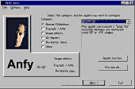 |
The left is the actual copy of the applet
selection menu. While applet names tell you a little about them, you
can always preview the selected applet with the default browser. |
| Or, "preview all"lets
you preview all the applets. |
| |
| 3.
Applet parameter menu. |
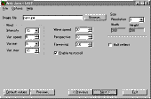 |
For each applet, this session
displays a different menu. Even so, some parameters such as "applet
size", "resolution", "enable textscroll"
appear again and again. |
|
Please consult each applet's tutorial for more information.
Suppose that you select "enable textscrtoll" during
this session, then, textscroll menu appear next.
|
| |
| 4.
Textscroll menu |
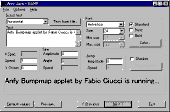 |
Textscroll menu includes
several parameters and some of them only work when you choose
a particular scroll type. |
|
|
For example, "V.Space"parameter
is locked when you select "horizontal" scroll.
On the contrary, if you select "vertical" scroll,
"Y Offset" parameter is locked, while you can define
"V.Space" parameter.
Although this sounds complicated, in actuality,
you should only select what are selectable in the wizard.
In the following discussion, suppose that all parameters
are selectable, although that would never be true in actual situation.
|
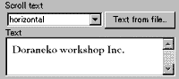 |
First, choose a scroll
type of text and type your desired text in the text field. There are
four scroll types: |
|
horizontal, vertical, zooming, and invzooming.
You can also import text data from existing documents.
By clicking "Text from file..."button,
file selection window will open, and ask you to choose a text file
for import. Remember, it must be an ASCII file.
|
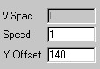 |
Next, decides the
precise animation by setting these three parameters seen left.
"V.Space" stands for "vertical spacing"of
text lines. |
|
This will not work unless you select "vertical"
scroll. "Speed" parameter defines how fast
the text scrolls or sometimes zooms and works finely in all
scroll types.
The value for "Y Offset"
is the vertical position of the text. This is measured from
the top.
|
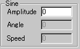 |
Next motion related
parameter is a set of sine curve parameters. These are meaningful
only if you select "horizontal" scroll. |
|
With these parameters set, you can produce
a waving line of text which scrolls from right to left. "Amplitude"
is the amplitude of the wave. Well, it decides high wave or
low wave.
"Angle" may be a misleading
name. It defines a cycle of a waving. When the value for "Angle"
is low, the distance between wavings is wide. If it is higher,
the distance will be narrower. Finally, "Speed"
here represent the speed of waving.
|
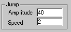 |
Another motion
related parameter is a set of "Jump"
parameters. They are enabled only when you select "horizontal"
scroll. |
|
|
Plus, jumping movement is exclusive to sine
movement. If you select both, sine movement would function
and jump movement be ignored.
Here, "Amplitude" decides
how high the text line jumps and "Speed"
decides its timing.
|
| Next, we will discuss about the parameters
which define how the text looks. |
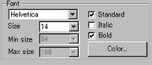 |
You now choose
a font, size, colour and shape of the font. |
|
|
By default, you select one font from Courier,
Helvetica, Dialog, Times Roman. These are standard fonts and
even if you want to type in non-Latin letters, such as Japanese,
Greek and Hebrew, these four fonts can be used.
This is achieved by automatically, so you
don't really have to set non standard fonts in any circumstances,
however, by unchecking "standard" box, you
are allowed to select one from all the available system fonts.
Note.
Using non-standard fonts causes unexpected
results in other people's systems. When you do thits, you
must be aware of what you are doing.
Only when you select "zooming"
or "invzooming" scroll, "Min. size"
and "Max. size" of the font are selectable.
With these two parameters, you can configure
how your text zooms in and out. Plus, normal text "Size"
parameter would be ignored, when you select "zooming"
or "invzooming".
|
|
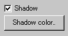 |
Another font related parameter
is "shadow" parameter. This literally decides the
shadow of the font. If you do not need shadowed letters, leave
this unselected. |
|
|
Appendix:
|
| |
| 5.
Expert menu. |
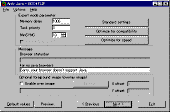 |
Next session is Expert menu. This includes
applet speed control, browser statusbar message, non Java™
enabled browser message and optional foreground image selection.
|
|
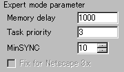 |
With these three parameters on the
left, you can configure how applets affect on CPU and memory
consumption. |
|
There are three pre-set values for them, i.e.:
Standard settings, Optimise for compatibility,
and Optimise for speed.
By selecting one of them, you can avoid manual
editing of the parameters. Let me present you a diagram which
shows the relationship between values of these parameters
and actual running speed of applets, and CPU intensiveness.
|
| Parameter |
Value
|
Speed
|
CPU intensiveness
|
| Memory delay |
high
|
high
|
high
|
| Task priority |
high
|
high
|
high
|
| MinSYNC |
low
|
high
|
high
|
It is important to select less CPU intensive values
all the time, so that visitors on your site would not be sick! :)
|
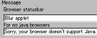 |
| Type in browser statusbar message above
column and non Java™ enabled browser message below.
|
|
|
| When you mouseover the applet,
the statusbarmessage set here will be displayed. Needless to say,
non Java™ enabled browser cannot display applets. Instead, the
message set here will be shown. |
| 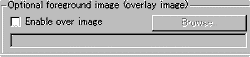 |
|
Next, if you need an image layered over the applet,
select "Enable overlay image" and specify an image
file.
Then, position it by filling X offset and
Y offset parameters. Both are measured from the top left
corner.
|
| |
| 6.
Regcode menu. |
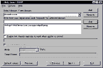 |
Now, you are in the regcode
menu. This applies only to registered users. Unregistered users should
skip this session. |
|
First, type in your domain in the Select domain/new
domain field, and click "Add". This will record
your domain in your HD. Next, while selecting the domain, write
the respective regcode below., And click "Add".
If you own multiple domains, repeat this procedure.
Of course, you can always remove wrong domains or regcodes.
|
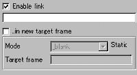 |
After you add the
regcode, link parameters are enabled. |
|
|
If you would like the applet to be linked to a certain
url, select "Enable link" and enter the link url
below space.
You can also specify a target frame in which the
linked page will be displayed.
Just select "..in new target frame"
and choose the mode from _blank, self, _parent, top, and
other target. If your choice is other target, you have
to specify the target frame name by yourself.
|
| |
| 7.
HTML output menu. |
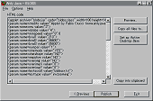 |
Here is the final menu. By now, you have
already built the Anfy object. |
| All you have done is reflected on the
HTML code here, which you need to copy & paste to your desired
HTML document with respective .class files. This can be done very
simply.
Click "Copy all files to..." button
and specify a destination file name, say, home.html to which
the HTML code will be output and the necessary .class files will
be copied to the same folder.
Or, you can copy the code and use it with your preferred
HTML editor. In this case, never forget to copy the necessary .class
files and images!
NOTE:
In the 1.4 release, we have added a new feature,
namely Active Desktop support. By pressing "Set as active
desktop item", you can see Anfy applets locally on your
desktop. This works as a screensaver, but could be rather CPU intensive.
NOTE2:
Though it isn't obliged, you are greatly encouraged
to use our Anfy banner provided in the archive and link to our site
(http://www.anfyteam.com). This adds your web site to the growing
Anfy community!
|
| |
|